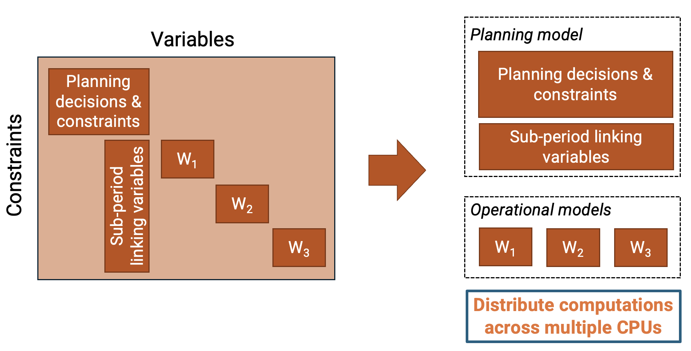

Tutorial: Running Macro
The interactive version of this tutorial can be found here.
In this tutorial, we start from a single zone electricity system with four resource clusters: utility scale solar PV, land-based wind power generation, natural gas combined cycle power plants, and electricity storage.
We consider three commodities: electricity, natural gas, and $\text{CO}_2$.
Initially, hydrogen is modeled exogenously, adding a constant electricity demand for hydrogen production to the electricity demand time series. In other words, we assume the existence of an electrolyzer that continuously consumes electricity to meet the hydrogen demand.
We model a greenfield scenario with a carbon price of 200 USD/ton, i.e., we allow $\text{CO}_2$ emissions with a penalty cost.
Note: We use the default units in Macro: MWh for energy vectors, metric tons for other commodities (e.g., $\text{CO}_2$) and dollars for costs
using Pkg; Pkg.add("VegaLite")using MacroEnergy
using HiGHS
using CSV
using DataFrames
using JSON3
using VegaLiteQuick Start: Using run_case
The simplest way to run a Macro case is using the run_case function, which handles loading inputs, solving the model, and writing outputs automatically:
using MacroEnergy
using HiGHS
(systems, solution) = run_case(
"one_zone_electricity_only",
optimizer=HiGHS.Optimizer,
optimizer_attributes=("solver" => "ipm", "ipm_optimality_tolerance" => 1e-3, "run_crossover" => "off")
);This returns:
systems: A vector of solvedSystemobjects (one per period)solution: The model object
You can customize the optimizer and other settings:
using MacroEnergy
using Gurobi
(systems, solution) = run_case(
"one_zone_electricity_only";
optimizer=Gurobi.Optimizer,
optimizer_attributes=("Method" => 2, "Crossover" => 0, "BarConvTol" => 1e-3)
);Step-by-Step: Manual Workflow
For more control over the workflow, you can load, generate, solve, and write outputs separately.
Loading Inputs
We first load the inputs using load_case, which returns a Case object containing one or more systems (for multi-period planning):
case = load_case("one_zone_electricity_only");Setting the Optimizer
Next, we set the optimizer. Note that we are using the open-source LP solver HiGHS, alternatives include the commercial solvers Gurobi, CPLEX, COPT.
optimizer = create_optimizer(HiGHS.Optimizer)Generating and solving the Model
We are now ready to generate and solve the capacity expansion model. Because Macro is designed to be solved by high performance decomposition algorithms, the model formulation has a specific block structure that can be exploited by these schemes. In the case of 3 operational sub-periods, the block structure looks like this:

(case, solution) = solve_case(case, optimizer);Writing Outputs
To output the results to CSV files, you can use write_outputs which writes all results for all periods:
case_path = "one_zone_electricity_only"
write_outputs(case_path, case, solution)Or write individual result types for a specific system:
system = case.systems[1]; # Get the first (or only) system
result_dir = joinpath(case_path, "results")
mkpath(result_dir)
write_capacity(joinpath(result_dir, "capacity.csv"), system)
write_costs(joinpath(result_dir, "costs.csv"), system, model)
write_flow(joinpath(result_dir, "flow.csv"), system)Viewing Results
To view the results without writing to files, use the following functions:
system = case.systems[1]; # Get the first (or only) system
get_optimal_capacity(system)
get_optimal_new_capacity(system)
get_optimal_retired_capacity(system)
get_optimal_flow(system)
get_optimal_discounted_costs(solution)The total system cost (in dollars) is:
MacroEnergy.objective_value(solution)and the total emissions (in metric tonnes) are:
system = case.systems[1]; # Get the first (or only) system
co2_node = MacroEnergy.find_node(system.locations, :co2_sink);
MacroEnergy.value.(sum(MacroEnergy.get_balance(co2_node, :emissions)))We can also plot the electricity generation results using VegaLite.jl:
system = case.systems[1]; # Get the first (or only) system
plot_time_interval = 3600:3624
natgas_power = MacroEnergy.value.(MacroEnergy.flow(system.assets[2].elec_edge)).data[plot_time_interval] / 1e3;
solar_power = MacroEnergy.value.(MacroEnergy.flow(system.assets[3].edge)).data[plot_time_interval] / 1e3;
wind_power = MacroEnergy.value.(MacroEnergy.flow(system.assets[4].edge)).data[plot_time_interval] / 1e3;
elec_gen = DataFrame(hours=plot_time_interval,
solar_photovoltaic=solar_power,
wind_turbine=wind_power,
natural_gas_fired_combined_cycle=natgas_power,
)
stack_elec_gen = stack(elec_gen, [:natural_gas_fired_combined_cycle, :wind_turbine, :solar_photovoltaic], variable_name=:resource, value_name=:generation);
elc_plot = stack_elec_gen |>
@vlplot(
:area,
x = {:hours, title = "Hours"},
y = {:generation, title = "Electricity generation (GWh)", stack = :zero},
color = {"resource:n", scale = {scheme = :category10}},
width = 400,
height = 300
)Exercise 1
Set a strict net-zero $\text{CO}_2$ cap by removing the slack allowing constraint violation for a penalty. This can be done by deleting the field price_unmet_policy from the $\text{CO}_2$ node in file one_zone_electricity_only/system/nodes.json
Then, re-run the model with these new inputs and show the capacity results, total system cost, emissions, and plot the generation profiles.
Solution
Open file one_zone_electricity_only/system/nodes.json, go to the bottom of the file where the $\text{CO}_2$ node is defined. Remove the lines related to the field price_unmet_policy, so that the node definition looks like this:
{
"type": "CO2",
"global_data": {
"time_interval": "CO2"
},
"instance_data": [
{
"id": "co2_sink",
"constraints": {
"CO2CapConstraint": true
},
"rhs_policy": {
"CO2CapConstraint": 0
}
}
]
}Quick approach using run_case:
(systems, solution) = run_case("one_zone_electricity_only");Manual approach for more control:
Re-load the inputs:
case = load_case("one_zone_electricity_only");Solve the model:
(case, solution) = solve_case(case, optimizer);We can check the results by printing the total system cost:
MacroEnergy.objective_value(solution)and the new emissions (which should be zero):
system = case.systems[1];
co2_node = MacroEnergy.find_node(system.locations, :co2_sink);
MacroEnergy.value.(sum(MacroEnergy.get_balance(co2_node, :emissions)))Finally, we plot the generation results:
system = case.systems[1];
plot_time_interval = 3600:3624
natgas_power = MacroEnergy.value.(MacroEnergy.flow(system.assets[2].elec_edge)).data[plot_time_interval] / 1e3;
solar_power = MacroEnergy.value.(MacroEnergy.flow(system.assets[3].edge)).data[plot_time_interval] / 1e3;
wind_power = MacroEnergy.value.(MacroEnergy.flow(system.assets[4].edge)).data[plot_time_interval] / 1e3;
elec_gen = DataFrame(hours=plot_time_interval,
solar_photovoltaic=solar_power,
wind_turbine=wind_power,
natural_gas_fired_combined_cycle=natgas_power,
)
stack_elec_gen = stack(elec_gen, [:natural_gas_fired_combined_cycle, :wind_turbine, :solar_photovoltaic], variable_name=:resource, value_name=:generation);
elc_plot = stack_elec_gen |>
@vlplot(
:area,
x={:hours, title="Hours"},
y={:generation, title="Electricity generation (GWh)", stack=:zero},
color={"resource:n", scale={scheme=:category10}},
width=400,
height=300
)